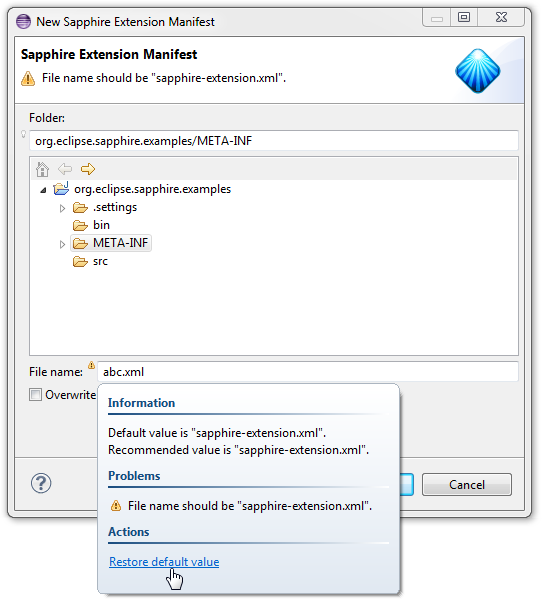
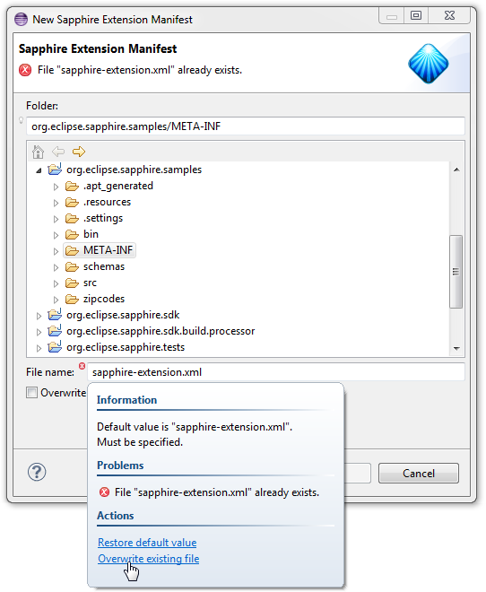

In many complex Sapphire models, it is useful to be able to constrain functionality based on a version. To simplify these scenarios, Sapphire now has native constructs for dealing with versions and version constraints.
Version - Represents a version as a sequence of long integers. In string format, it is represented as a dot-separated list of numeric segments, such as "1.2.3" or "5.7.3.2012070310003".
VersionConstraint - A boolean expression that can check versions for applicability. In string format, it is represented as a comma-separated list of specific versions, closed ranges (expressed using "[1.2.3-4.5)" syntax and open ranges (expressed using "[1.2.3" or "4.5)" syntax). The square brackets indicate that the range includes the specified version. The parenthesis indicate that the range goes up to, but does not actually include the specified version.
Sapphire.version() - Determines the version of Sapphire.
Both Version and VersionConstraint classes can be used as a type of a value property.
Example
// *** Version ***
@Type( base = Version.class )
ValueProperty PROP_VERSION = new ValueProperty( TYPE, "Version" );
Value<Version> getVersion();
void setVersion( String value );
void setVersion( Version value );
// *** VersionConstraint ***
@Type( base = VersionConstraint.class )
ValueProperty PROP_VERSION_CONSTRAINT = new ValueProperty( TYPE, "VersionConstraint" );
Value<VersionConstraint> getVersionConstraint();
void setVersionConstraint( String value );
void setVersionConstraint( VersionConstraint value );Further, version constraints can be evaluated in an expression via a pair of new functions. The VersionMatches function takes a version as the first parameter, a version constraint as a second parameter and returns a boolean. The SapphireVersionMatches function takes a version constraint as the sole parameter, evaluates it against Sapphire version and returns a boolean.
Example
In this example, the VersionMatches function is used to control property enablement.
// *** Provider ***
@Label( standard = "provider" )
@Enablement( expr = "${ VersionMatches( Root().Version, '[1.1' ) }" )
@XmlBinding( path = "provider" )
ValueProperty PROP_PROVIDER = new ValueProperty( TYPE, "Provider" );
Value<String> getProvider();
void setProvider( String value );Example
In this example, the VersionMatches function is used in sdef to control visibility of a properties view page.
<properties-view>
<page>
<label>provider</label>
<visible-when>${ VersionMatches( Root().Version, '[1.1' ) }</visible-when>
<content>
<property-editor>Provider</property-editor>
<property-editor>
<property>Copyright</property>
<scale-vertically>true</scale-vertically>
</property-editor>
</content>
</page>
</properties-view>The existing ClassLocator and ResourceLocator abstractions have been combined into a single abstraction. This abstraction enables Sapphire to find classes and other resources typically loaded from a class loader even if Sapphire is used in a context such as OSGi where a ClassLoader instance may not always be exposed.
Context
{
static Context adapt( ClassLoader loader )
static Context adapt( Class<?> cl )
abstract <T> Class<T> findClass( String name )
abstract URL findResource( String name )
abstract List<URL> findResources( String name )
}
BundleBasedContext extends Context
{
static Context adapt( Bundle bundle )
}In addition to merging of the locators, this enhancement includes two new features:
The ConversionService converts an object to the specified type. One common application is to convert an input (such as a file) to a resource when instantiating the model.
| Sapphire.ConversionService.IFileToWorkspaceFileResourceStore |
|---|
| Capable of converting an IFile to a WorkspaceFileResourceStore or a ByteArrayResourceStore. |
| Sapphire.ConversionService.ByteArrayResourceStoreToXmlResource |
| Capable of converting a ByteArrayResourceStore to an XmlResource or a Resource. Conversion is only performed if resource store corresponds to a file with "xml" extension or if the context element type has XML binding annotations. |
A ConversionService can delegate to other conversion services to create a conversion chain. In fact, a common conversion of IFile to XmlResource is a chain of two ConversionService implementations.
Example
In the purchase order sample, a custom ConversionService is used because the default file extension for purchase order files is "po" rather than "xml" and PurchaseOrder element does not have XML binding annotations. The combination of these two factors prevent the framework-provided ConversionService implementations from engaging.
@Service( impl = PurchaseOrderResourceConversionService.class )
public interface PurchaseOrder extends IModelElement
{
...
}public class PurchaseOrderResourceConversionService extends ConversionService
{
@Override
public <T> T convert( Object object, Class<T> type )
{
if( type == XmlResource.class || type == Resource.class )
{
final ByteArrayResourceStore store = service( MasterConversionService.class ).convert( object, ByteArrayResourceStore.class );
if( store != null )
{
return type.cast( new RootXmlResource( new XmlResourceStore( store ) ) );
}
}
return null;
}
}Note the use of chaining as part of the presented ConversionService implementation. The input could be any number of things, but as long as another ConversionService implementation knows how to convert it to a ByteArrayResourceStore, this implementation will take the conversion the rest of the way to a Resource.
When implementing operations that create files, a common need is to gather the name of a file from the user. The file name must be validated to be compatible with user's platform and certain normalization should be performed to simplify file name input.
Sapphire now provides FileName class and associated services.
The MasterConversionService converts an object to the specified type by delegating to available ConversionService implementations. If object is null or is already of desired type, the object is returned unchanged.
An implementation of this service is provided with Sapphire. This service is not intended to be implemented by adopters. See ConversionService instead.
Example
In this example, an IFile is converted to a Resource as part of instantiating the model. Note how this code is not aware of the details of the conversion or what type of a resource is created.
IFile file = project.getFile( "contacts.xml" )
Resource resource = ContactsDatabase.TYPE.service( MasterConversionService.class ).convert( file, Resource.class );
ContactsDatabase model = ContactsDatabase.TYPE.instantiate( resource );The existing ModelElement.initialize() method has been enhanced to be consistent with fluent interface principles by returning the element instead of void. This facilitates chaining.
Example
The following two snippets are equivalent.
Operation op = Operation.TYPE.instantiate( resource );
op.initialize();Operation op = Operation.TYPE.instantiate( resource ).initialize();A new variant of attach() and detach() methods has been added to make it a bit less verbose to listen for changes to a particular property.
ModelElement
{
boolean attach( Listener listener )
void attach( Listener listener, String path )
void attach( Listener listener, ModelPath path )
void attach( Listener listener, ModelProperty property )
boolean detach( Listener listener )
void detach( Listener listener, String path )
void detach( Listener listener, ModelPath path )
void detach( Listener listener, ModelProperty property )
}Example
The following two snippets are equivalent.
op.attach( listener, Operation.PROP_FILE_NAME.getName() );op.attach( listener, Operation.PROP_FILE_NAME );Several method have been enhanced with an overloaded variant that accepts a string property name in place of a ModelProperty object. This reduces verbosity in situations where code does not already have a ModelProperty instance handy.
ModelElement
{
<S extends Service> S service( ModelProperty property, Class<S> serviceType )
<S extends Service> S service( String property, Class<S> serviceType )
<S extends Service> List<S> services( ModelProperty property, Class<S> serviceType )
<S extends Service> List<S> services( String property, Class<S> serviceType )
boolean enabled( ModelProperty property )
boolean enabled( String property )
Status validation( ModelProperty property )
Status validation( String property )
}Example
The following two snippets are equivalent.
Status validation = op.validation( op.property( "FileName" ) );Status validation = op.validation( "FileName" );The new ModelElementList.enabled() method provides a simpler way to check list property's enablement directly through the property accessor.
Example
The following two statements are equivalent.
container.getEntities().enabled()container.enabled( Container.PROP_ENTITIES )A new variant of instantiate method provides a way to create a model instance from an arbitrary input without knowing which resource needs to be created. The resource creation is handled by delegating to ConversionService implementations.
ModelElementType
{
<T extends IModelElement> T instantiate()
<T extends IModelElement> T instantiate( Resource resource )
<T extends IModelElement> T instantiate( Object input )
}Example
The following three snippets are equivalent.
Resource resource = new RootXmlResource( new XmlResourceStore( new WorkspaceFileResourceStore( file ) ) );
PurchaseOrder po = PuchaseOrder.TYPE.instantiate( resource );Resource resource = PurchaseOrder.TYPE.service( MasterConversionService.class ).convert( file, Resource.class );
PurchaseOrder po = PuchaseOrder.TYPE.instantiate( resource );PurchaseOrder po = PuchaseOrder.TYPE.instantiate( file );In certain cases, deviations from property's default value are allowed, but not recommended.
Consider a file creation wizard where the file should have a certain name to function properly. This is common for configuration files. For flexibility and consistency, the wizard should allow a different file name to be used if the user so desires, but it should warn the user that they are deviating from the file name recommendation.
The new @PreferDefaultValue annotation is used to specify the above semantics. Utilizing this annotation produces a warning and a fact statement.
Warning: [property] should be [default-value].
Fact: Recommended value is [default-value].
Example
@DefaultValue( text = "sapphire-extension.xml" )
@PreferDefaultValue
ValueProperty PROP_FILE_NAME = new ValueProperty( TYPE, CreateWorkspaceFileOp.PROP_FILE_NAME );
In the past, when a service implementation needed to leverage another service from the same context, service context needed to be referenced explicitly. This led to unnecessary verbosity, so a pair of convenience methods have been added that delegate to the current context.
Service
{
protected final <S extends Service> S service( Class<S> serviceType )
protected final <S extends Service> List<S> services( Class<S> serviceType )
}Example
The following two snippets are equivalent within Service implementation.
context().service( ExampleService.class )service( ExampleService.class )Determines if a property is enabled. Can be used either with two arguments (element and property name) or with a single property name argument. In the single argument form, the context element is used.
Examples
In these examples, the context element is Employee which has Assistant and Manager properties. The first example asks if Assistant property is enabled for this employee. The second example asks if Assistant property is enable for this employee's manager.
${ Enabled( 'Assistant' ) }
${ Enabled( Manager, 'Assistant' ) }Converts a string to upper case.
Examples
${ UpperCase( Name ) }
${ Name.UpperCase() }Converts a string to lower case.
Examples
${ LowerCase( Name ) }
${ Name.LowerCase() }Use expression language when specifying editor page header text.
Example
<editor-page>
<page-header-text>contacts (${ Contacts.Size })</page-header-text>
</editor-page>Use expression language when specifying master details outline header text.
Example
<editor-page>
<outline-header-text>outline (${ Contacts.Size })</outline-header-text>
</editor-page>Use expression language when specifying a conditional (if-then-else).
Example
<if>
<condition>${ VersionMatches( Root().Version, "[1.1" ) }</condition>
<then>
...
</then>
<else>
...
</else>
</if>Use expression language when specifying visibility of a section.
Example
<section>
<visible-when>${ VersionMatches( Root().Version, "[1.1" ) }</condition>
<content>
...
</content>
</section>Use expression language when specifying visibility of a master-details content node.
Example
<node>
<visible-when>${ VersionMatches( Root().Version, "[1.1" ) }</condition>
<section>
...
</section>
</node>Use expression language when specifying visibility of a master-details content node factory.
Example
<node-factory>
<property>Entities</property>
<visible-when>${ VersionMatches( Root().Version, "[1.1" ) }</condition>
<case>
...
<case>
</node-factory>Use expression language when specifying visibility of a property editor.
Example
<property-editor>
<property>Description</property>
<visible-when>${ VersionMatches( Root().Version, "[1.1" ) }</condition>
</property-editor>Two static utility methods have been added to XmlUtil to make it easier to convert documents to and from namespace-qualified form.
public static void convertToNamespaceForm( Document document, String namespace )
public static void convertToNamespaceForm( Document document, String namespace, String schemaLocation )
public static void convertFromNamespaceForm( Document document )The collection factories have been enhanced with new methods to support broader range of use cases and a brand new SortedSetFactory.
ListFactory
{
static List<E> empty()
static List<E> singleton( E element )
static List<E> unmodifiable( E... elements )
static List<E> unmodifiable( Collection<E> elements )
static ListFactory<E> start()
ListFactory<E> add( E element )
ListFactory<E> add( E... element )
ListFactory<E> add( Collection<E> element )
E remove( int index )
E get( int index )
boolean contains( E element )
int size()
ListFactory<E> result()
}
SetFactory
{
static Set<E> empty()
static Set<E> singleton( E element )
static Set<E> unmodifiable( E... elements )
static Set<E> unmodifiable( Collection<E> elements )
static SetFactory<E> start()
SetFactory<E> add( E element )
SetFactory<E> add( E... element )
SetFactory<E> add( Collection<E> element )
boolean remove( E element )
boolean contains( E element )
int size()
SortedSet<E> result()
}
SortedSetFactory
{
static SortedSet<E> empty()
static SortedSet<E> singleton( E element )
static SortedSet<E> unmodifiable( E... elements )
static SortedSet<E> unmodifiable( Collection<E> elements )
static SortedSetFactory<E> start()
static SortedSetFactory<E> start( Comparator<E> comparator )
SortedSetFactory<E> add( E element )
SortedSetFactory<E> add( E... element )
SortedSetFactory<E> add( Collection<E> element )
boolean remove( E element )
E first()
E last()
boolean contains( E element )
int size()
SortedSet<E> result()
}
MapFactory
{
static Map<K,V> empty()
static Map<K,V> singleton( K key, V value )
static Map<K,V> unmodifiable( Map<K,V> map )
static MapFactory<K,V> start()
MapFactory<K,V> add( K key, V value )
MapFactory<K,V> add( Map<K,V> map )
V remove( K key )
V get( K key )
boolean contains( K key )
boolean containsKey( K key )
boolean containsValue( V value )
int size()
Map<K,V> result()
}Various scenarios in both Sapphire and common usage of Sapphire require locating Java source folders. Sapphire JDT integration now includes a set of utility functions to make this easier.
JdtUtil
{
// Finds the nearest Java source folder for the specified resource.
// The nearest is defined as either the source folder containing
// the specified resource or the first non-derived source folder
// of the containing project.
static IContainer findSourceFolder( IResource resource )
// Finds all source folders for a project, which is specified either
// directly or indirectly via a contained resource.
static List<IContainer> findSourceFolders( IResource resource )
static List<IContainer> findSourceFolders( IProject project )
static List<IContainer> findSourceFolders( IJavaProject project )
}The method for accessing child nodes has been enhanced. The MasterDetailsContentNode.nodes() method now returns a customized list object that provides additional operations specific to list of nodes. For instance, there is a method to filter list of nodes to contain only visible nodes.
Example
The following produces all nodes whether or not they are visible.
root.nodes()A slight variation on the above statement produces only the visible nodes.
root.nodes().visible()The new NodeListEvent provides notification when the list of child nodes changes. Note that this event does not fire when child node visibility changes. See VisibilityChangedEvent for that functionality.
node.attach
(
new FilteredListener<NodeListEvent>()
{
@Override
protected void handleTypedEvent( NodeListEvent event )
{
...
}
}
)Check part's visibility using SapphirePart.visible() method. To get notified of changes to part's visibility, listen for VisibilityChangedEvent.
Example
boolean visible = editor.visible()
editor.attach
(
new FilteredListener<VisibilityChangedEvent>()
{
@Override
protected void handleTypedEvent( VisibilityChangedEvent event )
{
...
}
}
)The new Status.contains() method provides a simpler way to check if property validation has a problem of certain type. This can be useful when implementing automated validation problem fixes.
Example
if( op.getFileName().validation().contains( "Sapphire.Workspace.CreateFileOp.FileExists" ) )
{
...
}The new Value.enabled() method provides a simpler way to check value property's enablement directly through the property accessor.
Example
The following two statements are equivalent.
entity.getName().enabled()entity.enabled( Entity.PROP_NAME )The reusable form for creating workspace files has been enhanced with an automated problem resolution to overwrite an existing file. This makes it slightly easier for user to go from problem to resolution since both are presented in the same popup.
